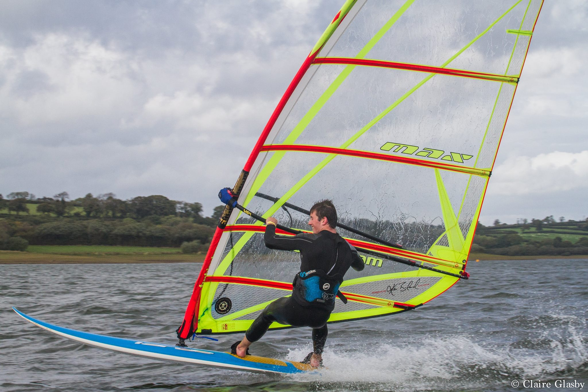

I became interested in software development in high school, after I taught myself Python, and initially went to University of Bristol to study Electrical and Electronic Engineering.
After my exchange year at McGill University in Montreal, Canada, I realised my true interests lay in software development (during a brief stint trying out neuroscience),
and switched to Computer Science and Electronics. I'm currently in my fourth year in my integrated MEng course, and eagerly anticipating my career's future!
In my free time I enjoy climbing and cycling in and around Bristol. I enjoy longer backpacking and mountaineering adventures on my holidays.
You might just also find me windsurfing on the weekends, if the wind's blowing...

My Skills
I love getting stuck into new projects, and am always eager to learn new skills.
I have great experience writing in Python, Java and MATLAB, for school/personal projects and work experience.
I can also write in C/C++, Bash, HTML and CSS.
My degree has given me ability in electronics and digital design (VHDL) as well.
I have experience working in industry from my summer internship in Control Techniques,
and in research teams from my experience in the BIAPT Lab at McGill.
On top of this I have learned many organisational and leadership skills from my
time on committee of university societies.
A screenshot of the (work in progress) data visualisation screen of the biomusic app, with server data loaded in
Android Developer -- May 18 - Aug 18
After my exchange year in Montreal, I worked as the lead developer on the Biomusic Android app in the BIAPT Lab.
This app uses a fingertip sensor to gather realtime heart-rate, blood volume pulse, electro-dermal activity, and skin temperature data,
and sends it to the app where it is used to create 'biomusic' for that user.
Its beta users in our lab were mainly families with physically or developmentally disabled children, often with very limited communication ability,
where the app was used to provide another communication channel for the parents.
I visited the family of one particular child a few times over the summer, to engage them in the development of the project, and gather feedback for the app.
My main technical role over the summer was to enable both online and offline database storage functionality for the biosignals.
I worked with a contracting backend developer who had helped setup a server for the lab, and had created a database using MySQL and a PHP based API,
which I used store collected data, and pull from for a data visualisation part of the app.
The offline storage was done using the Realm android library, an alternative to the SQLite database.
Another big part of the my role over the summer was creating a data visualisation GUI for the biosignal data using Android Studio.
This GUI also allowed comments to be added to the data where emotional states were linked to specific time periods. These comments were then stored in the database.
This was intended to be used later on in the lab to find links between the biosignals and emotional states using deep learning techniques.
I also developed signal processing algorithms to use for extracting features from the biosignals. I prototyped them in MATLAB and Python,
and also experimented with using machine learning techniques, for example a genetic algorithm to fine tune the parameters of the algorithms.
I then implemented these algorithms in the app.
A heatmap of visual cortex data that was the culmination of around two week's processing time
Undergraduate Research Assistant -- Sep 17 - Mar 18
During my exchange year in Montreal, I worked in a visual systems lab in the neuroscience department at McGill University.
I had always been interested in neuroscience, and wanted to take advantage of McGill University's fame in this area.
The work given to me was related to optimising the time taken to complete a retinotopic mapping of a person's visual cortex,
i.e. Where neurons in the brain related to a particular point in a person's field of vision.
I was given a large amount of background reading, given my inexpertise with neuroscience, and found it fascinating learning more about the brain, visual system and visual cortex.
The actual day to day of the work consisted mostly of writing MATLAB scripts to cross index the two datasets I was using, and create the data visualisations.
I also learned a great deal about using Unix based OS, and the Bash command language, which I used to interface with the extremely large number of files I needed for all the data.
In fact, due to the huge size of the datasets I was using (on the order of TBs), I needed to make use of the neuroscience department's SGE computing cluster system,
which time consuming processes could be submitted to.
I secured my internship at Control Techniques by being granted an E3 Academy industrial scholarship.
I decided to leave the scholarship at the end of the summer due to realising I didn't want a career in electrical engineering,
but nevertheless gained some valuable industry experience in a great company.
My work over the summer was split into two parts. The first part was in the PCB design team, laying out and tracking PCBs using industry level software.
This gave me my first real experience of working in an engineering company, and gave me great experience working as part of a professional team.
The second part of the summer I worked in the safety team, debugging an ARM microprocessor via JTAG.
I spent my time in the team working towards setting up a password lock on the JTAG.
Projects
Embedded Gesture Recognition using Neural Networks
Charts showing the training error exponentially decreasing, and more importantly, the validation error decreasing.
This was the final group project (teams of 2) in an embedded systems course. Over the course up until that point, we'd had been gradually implementing a flexible artificial neural network with back propagation,
on a microcontroller system, using LabVIEW. We had used this recently to train a model to recognise the orientation of the system using the onboard accelerometers.
However for this project we needed to train a network that could identify digits drawn in the air with the microcontroller system.
Implementing the neural network and back propagation algorithm was incredibly interesting,starting from deriving the weight updating functions.
We used mean squared error for the loss function, and gradient descent for the training algorithm. We made the network and training as general as possible,
with parameters like batch size and learning rate adjustable as the network was training. This proved to hugely helpful later on.
Generating the dataset consisted of me sitting in the lab for 6 hours waving the system around.
It ended up only being me who was able to generate the dataset, and as such, the final model only worked for me.
The accelerometer data was low pass filtered, but no other preprocessing was done to it other than downsampling.
After trying out several network configurations, and fixing some bugs, it worked!
The error would previously drop and then plateau, but we finally got it down to near zero.
This was a really exciting introduction into the implementation of machine learning, and I hope I can dive deeper into this fascinating technology at some point.
You can read more about the project in our final report for the project here (pdf download).
Face Detection and Age Classification using OpenCV
Testing the Haar cascade algorithm to find facial features
I took an intro to computer vision course for my first semester at McGill, and was blown away by algorithms used to power such an ever increasingly powerful field.
This project was the final group assignment (teams of 4) in this course, where we were given the task of finding faces in a picture,
identifying where their facial features lay, extracting data from these features, and then classify the age of the person from these features using machine learning techniques.
My role in the assignment was identifying features once faces had been found (using the AdaBoost algorithm), and extracting salient metrics to be fed into the classifier.
I experimented with two methods. The first defined likely search areas for the eyes and mouth (and assumes the face is looking directly into the camera),
and uses horizontal projection to find likely midpoints of the features. Then the connected components algorithm was used to find the extent of these features.
The other method used Haar cascades to find the features (incremently refines a search for the features using known general characteristics). I ended up using the second, more robust method.
With the features found, I extracted features such as wrinkle depth and variance across the cheeks and forehead, and ratios of facial feature size and proportion.
These were then used as the metric vectors for each face for the classifier. We experimented with SVM, Random Forest and Neural Network models to find the best classifier.
You can view the code written in this project in this jupyter notebook.
Peak Detection using an FPGA
A schematic for the architecture of our command receiver
Taking digital design classes throughout my degree has been a great way to understand computers from the bottom up.
In this class we were tasked with designing a serial data peak detector, with a command interface, written in VHDL, to be implemented on an FPGA.
VHDL is a hardware description language, so the code executes concurrently rather than sequentially.
This was an interesting transition from software languages.
The initial design was very important, dividing the required processes into several Mealy machines.
These were then written up in VHDL, and connected according to the schematic.
Debugging the design to fabricatable was surprisingly difficult, and ensuring there were no latches, only flip-flops, required a lot of thought.
Honors and Awards
Alumni Academic Achievement Award
Awarded £500 for top 3 academic performance in the Faculty of Engineering at the University of Bristol, first year.
Studentship Award
Awarded paid summer research opportunity or £250 for academic achievement, received in second year.
E3 Scholarship
Awarded scholarship worth £5000 a year, with internship each summer and guaranteed employment after graduation (Later left this scholarship).
References and Comments
I would like to congratulate you for the quality work that you provided for the first assignment. Reading your clean code was pure pleasure.